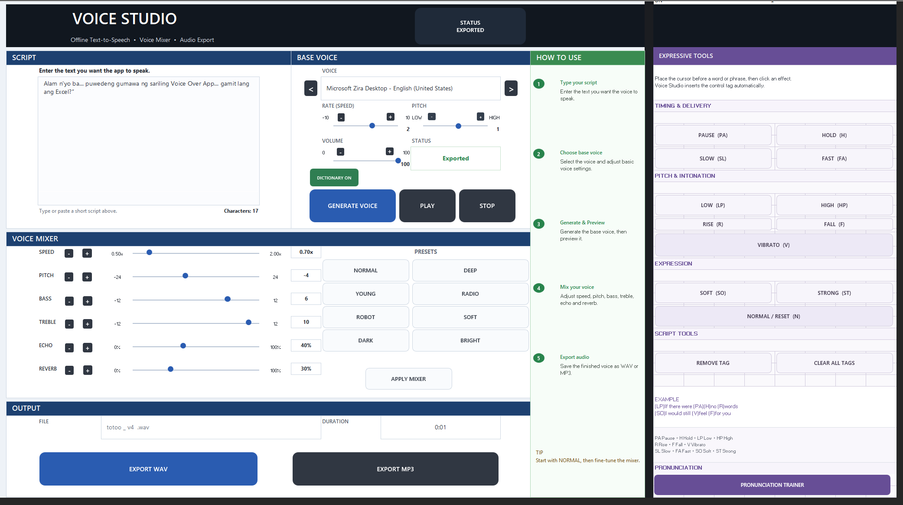
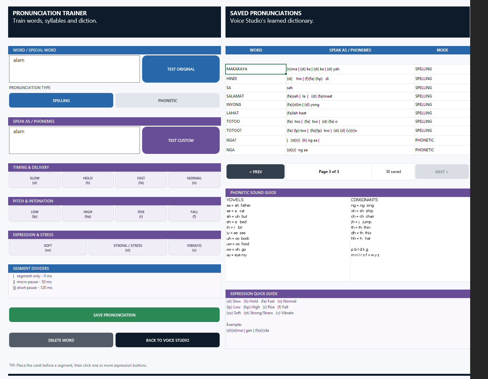

Voice Studio
An Excel-based voice-over workspace for creating speech, adjusting voice characteristics, applying expressive controls, training pronunciations and exporting finished audio.
DOWNLOAD APPRequires Microsoft Excel with macros enabled.

ABOUT THE BUILD
WHAT IT DOES
Voice Studio provides an organized workspace for generating voice-over audio and controlling how the voice sounds. It combines text-to-speech, playback, voice mixing, expressive speech controls and custom pronunciation tools in one application.
FEATURES
KEY FUNCTIONS
APP PREVIEW
VOICE STUDIO WORKSPACE
Write or paste a script, select a voice, adjust the base voice settings and generate speech directly from the workspace.
VOICE MIXER
SHAPE THE VOICE
Adjust speed, pitch, bass, treble, echo and reverb to create different voice characteristics. Built-in presets provide a quick starting point before fine-tuning the sound.
EXPRESSIVE TOOLS
CONTROL HOW WORDS ARE SPOKEN
Expression tags can be inserted into the script to control timing, delivery, pitch and emphasis without rewriting the original text.
PRONUNCIATION
TRAIN CUSTOM PRONUNCIATIONS
Create pronunciation rules for words that need special handling. Voice Studio can save customized spelling or phonetic rules and reuse them whenever those words appear in a script.

DICTIONARY
SAVED PRONUNCIATIONS
Save frequently used pronunciation corrections and build a reusable custom dictionary. The pronunciation trainer supports spelling-based and phonetic rules together with expressive controls.
AUDIO OUTPUT
EXPORT YOUR VOICE
After generating and processing the voice, the finished audio can be exported for use in videos, presentations, tutorials and other projects.
GETTING STARTED
HOW TO USE
Download the App
Click the Download App button and save the workbook to your computer.
Open in Microsoft Excel
Open the downloaded .xlsm file using Microsoft Excel.
Enable Macros
If prompted by Excel, enable the required workbook content so Voice Studio can run.
Enter Your Script
Type or paste the script you want the application to speak.
Generate and Preview
Select your voice, adjust the settings and generate the audio for preview.
Mix and Export
Apply voice effects if needed, then export the finished audio as WAV or MP3.
SUPPORT
QUESTIONS OR FEEDBACK?
If you encounter an issue, have feedback or have an idea for a future build, connect with Engineer Builds.
CONTACT ENGINEER BUILDS